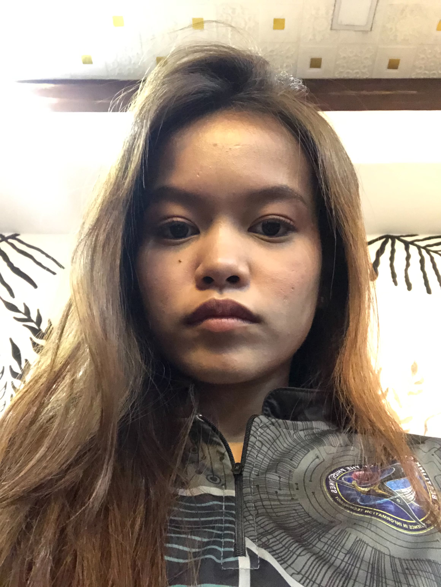

CURRENT STUDIES
Bachelor of Science in Information Technology
Bestlink College of the Philippines
Learning about information technology, web development, and digital problem-solving.
GET TO KNOW ME
This page shares my student background, education, and interests. You can edit the text to better reflect your own story.

Your photo goes hereMY INTRODUCTION
My name is Allyssa Angelica B. Clemente, and I am a Bachelor of Science in Information Technology (BSIT) student at Bestlink College of the Philippines.
As an IT student, I am learning how technology can be used to solve problems and create useful digital experiences. I am especially interested in developing my web design and programming skills through lessons, practice, and school projects.
This portfolio is a work in progress. I plan to update it as I gain experience, complete activities, and discover new areas of technology that interest me.
My goal: continue improving my technical knowledge, become more confident in creating websites, and apply what I learn to practical projects.
My interests: technology, web design, learning new digital tools, and creative problem-solving. Edit this list to match your personal interests.
EDUCATION
CURRENT STUDIES
Bestlink College of the Philippines
Learning about information technology, web development, and digital problem-solving.